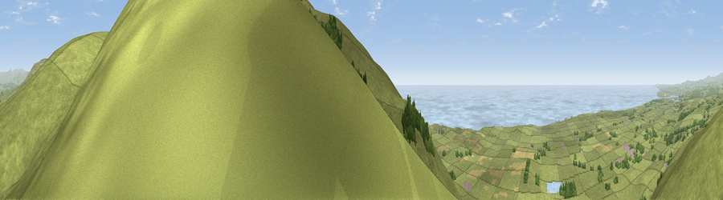

Viewpoint near Bootle
#868 in England · top 10% of its area beats it · near BootleThe view, rendered

A 360° render of this exact spot computed from the terrain model, tree cover and land cover — summer colours, afternoon light, calibrated against photographs of famous viewpoints. Real trees, hedges and buildings will differ in detail.
The panorama
Grey silhouette: terrain skyline in each direction (720 bearings, Earth curvature and refraction included). Dashed green: skyline with trees (+15 m) and buildings (+8 m) as obstacles. Blue strip: how far the ground is visible on each bearing.
Where the view opens
Wedge length = distance to the farthest visible ground on that bearing (vegetation-aware). Rings at 10, 25 and 50 km.
What fills the view
80% grassland · 12% water · 5% woodland · 2% cropland
Angular shares of the visible panorama (visual magnitude), not map area. Landscape diversity 0.30 (0–1 Shannon).
Key numbers
More beautiful places nearby
The staircase of upgrades: each row has a higher view potential than everything closer. Driving times are estimates from straight-line distance, calibrated against real road routing — check an actual route before setting out.
| Place | Direction | Drive | Score |
|---|---|---|---|
| Viewpoint near Whitbeck | S · 1 km | ~4 min | 88.3 |
| Viewpoint near Boot | NNE · 18 km | ~32 min | 88.9 |
| Viewpoint near Finsthwaite | E · 27 km | ~43 min | 90.3 |
| The Knoll | S · 401 km | ~383 min | 91.0 |
54.26873, -3.34926 · source: screening · position refined by local search. Computed location — check access rights before visiting.